２０２４年に『ましゅもっち』や『ピコぬい』を発売したフクヤさんより、新たなましゅもっちシリーズが発売されました！
商品のラインナップは、寝ている妖精たちの『おてのりましゅもっち』（全４種）と、約８センチと小さめな『ましゅもっちひとくちサイズ』（全４種）です。
全部合わせて８種類のぬいぐるみ、皆さんは全部ゲットされましたでしょーか？
ぬいぐるみはプライズ景品なので、ゲーセンのクレーンゲームコーナーに行くと見つかるかと思います。
私の方はいつものようにメルカリにてゲット・・。
『おてのりましゅもっち』の４種類をゲットしましたので、レポートしたいと思います。
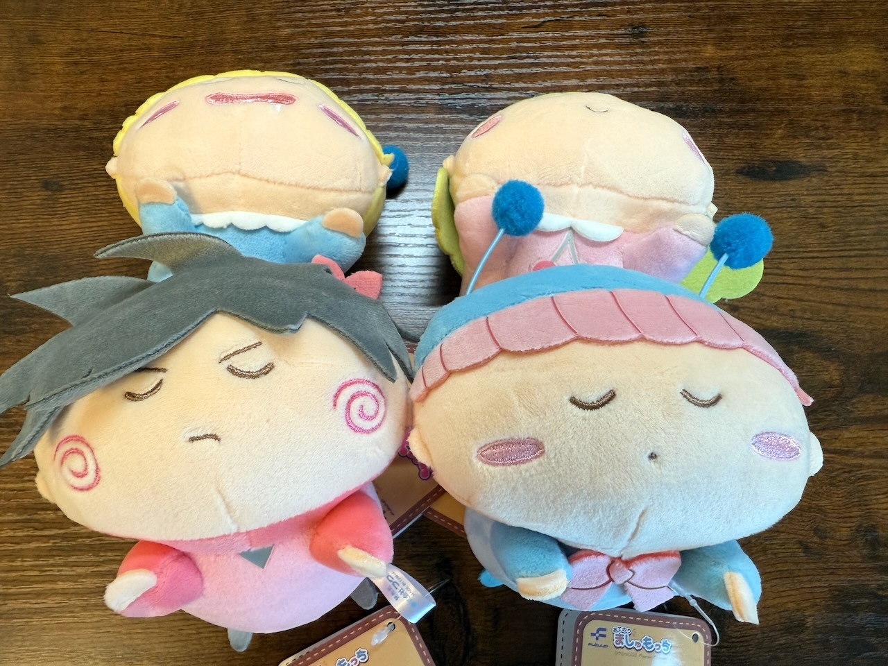
４種類といったらもちろん主役４妖精のミルモ・リルム・ムルモ・ヤシチですね。
並べて集合写真を撮ってみたけど、うつ伏せで寝ているので撮影が難しい・・(^◇^;)
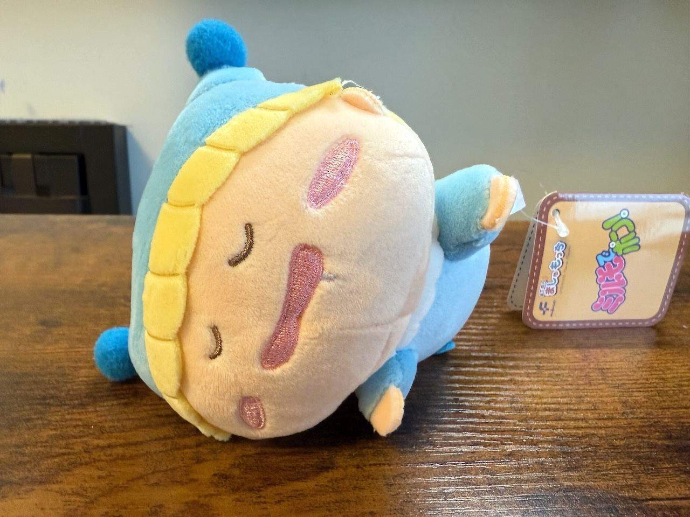
それでは１人ずつ紹介していきますね。
ミルモは口からよだれが出てる・・夢の中でチョコを食べまくっているのでしょうね。
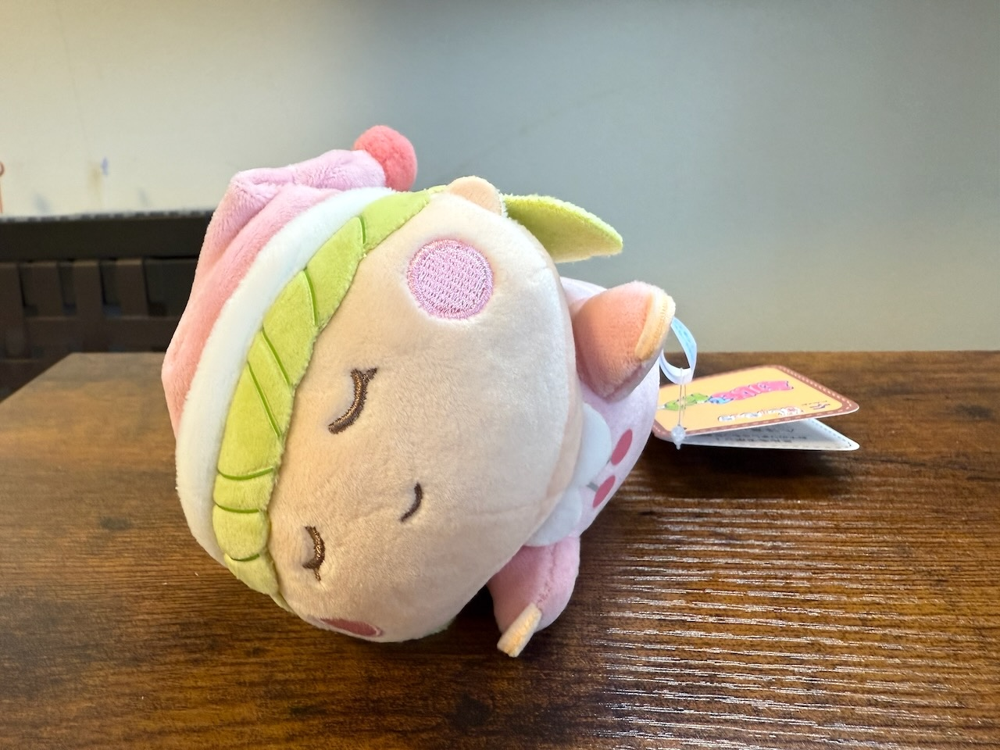
リルムはすやすや寝顔ですね。
なおリルムの帽子は左右対称ではなかったりします。
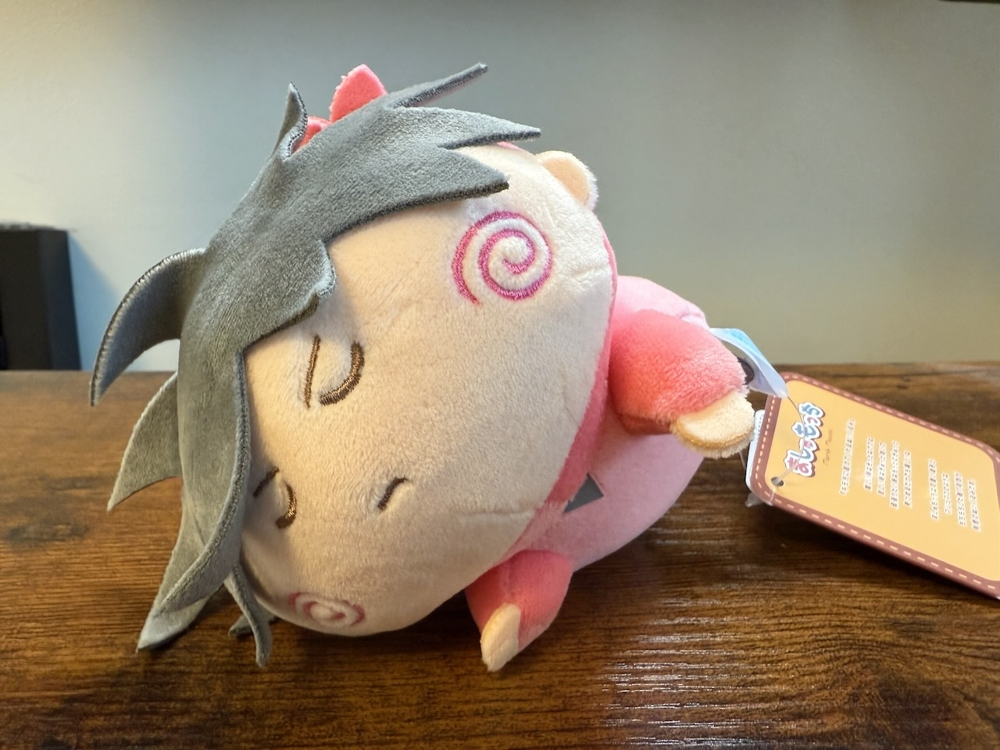
真剣な寝顔のヤシチは夢の中でミルモとケンカしているのかな？
普段は髪で隠れている右目もしっかり描かれているのけど、フェルト布の髪がそりかえってしまって右目が丸見えになっちゃってる・・

ムルモもすやすや寝顔。
どんな夢を見ているのか、ムルモの夢を覗いてみたくなりますね。
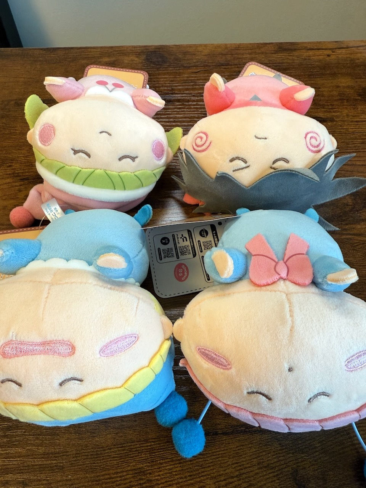
集合写真を逆さまに撮るとみんなの表情がよく見えます(^^)
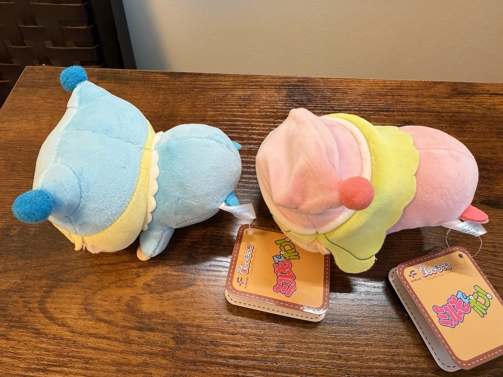
横から撮影〜
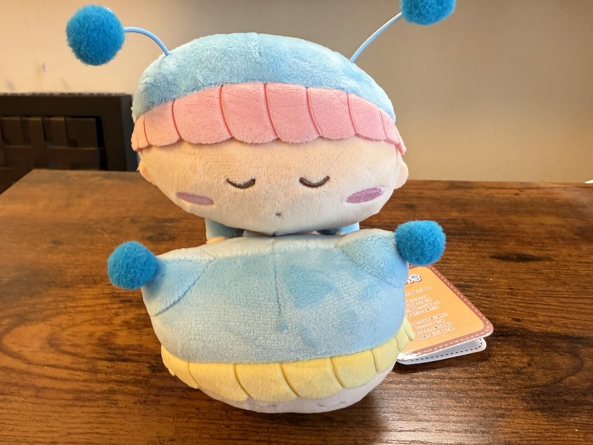
甘えん坊のムルモはミルモの背中に乗っかって寝たりして。
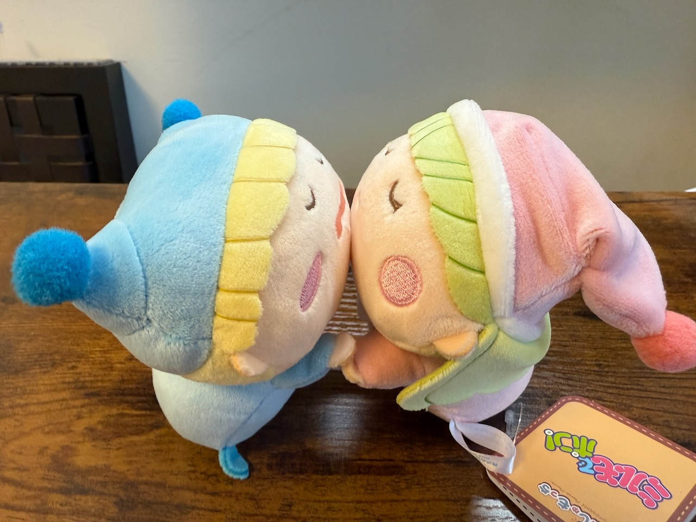
こういう遊び方もできちゃう！？
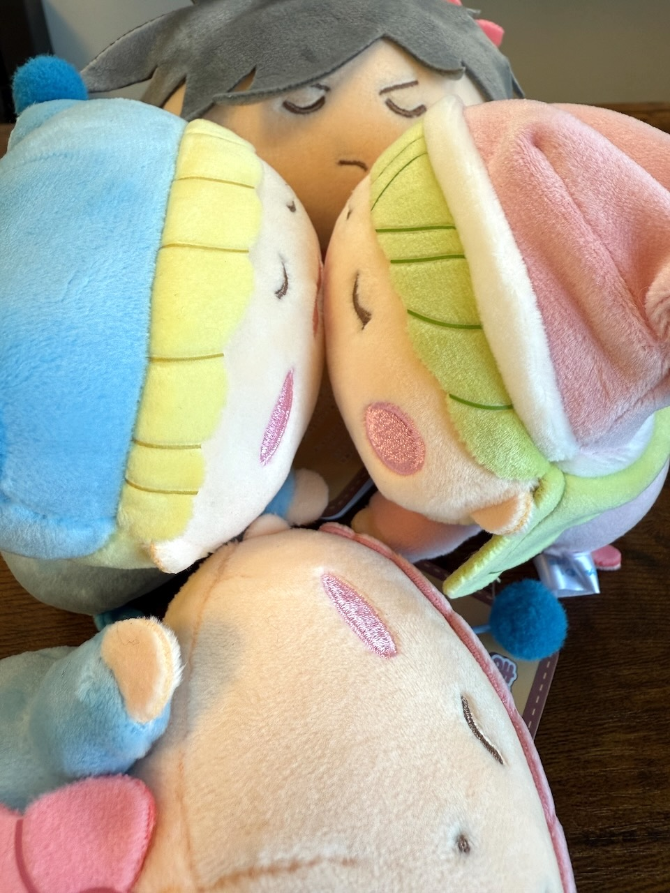
ぎゅうぎゅうの集合写真にしてみました(^◇^;)
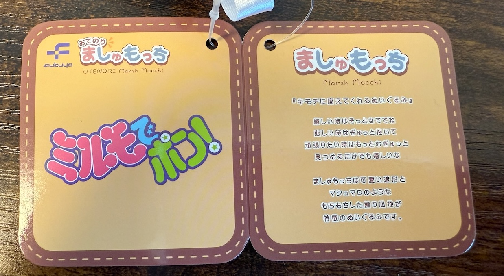
ぬいぐるみに付いているタグです。
タグの説明にあるように、ぬいぐるみは本当にもちもちの触り心地で、触っていて気持ちいいです♪
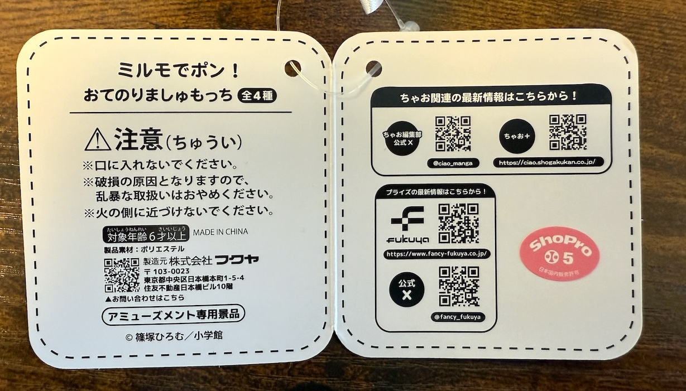
タグの裏側にはちゃお関連のバーコードが記載されていました。
くれぐれも妖精たちを火の側に近づけないでくださいね。
レポートは以上になります。
おてのりましゅもっちは造形や手触りの完成度が高いので、皆さんもぜひ１つでもゲットしてみてほしいです。
そして今回レポートできなかった『ひとくちサイズ』の方も、なんとかゲットしてレポートしたいと思います。
⭐新商品情報⭐
— 【公式】フクヤ｜プライズ (@fancy_fukuya) April 18, 2025
大人気作品『ミルモでポン！』から
ましゅもっちシリーズが登場！
“おてのりましゅもっち”は、
すやすや寝顔♪💤
“ましゅもっちひとくちサイズ”は、
ニコニコ笑顔☺
やわらかいもちもち生地で、
こだわりがたっぷり詰まっています！
4月下旬頃から全国のアミューズメント施設の… pic.twitter.com/TFnjOjI8Ae
(2025/5/10)